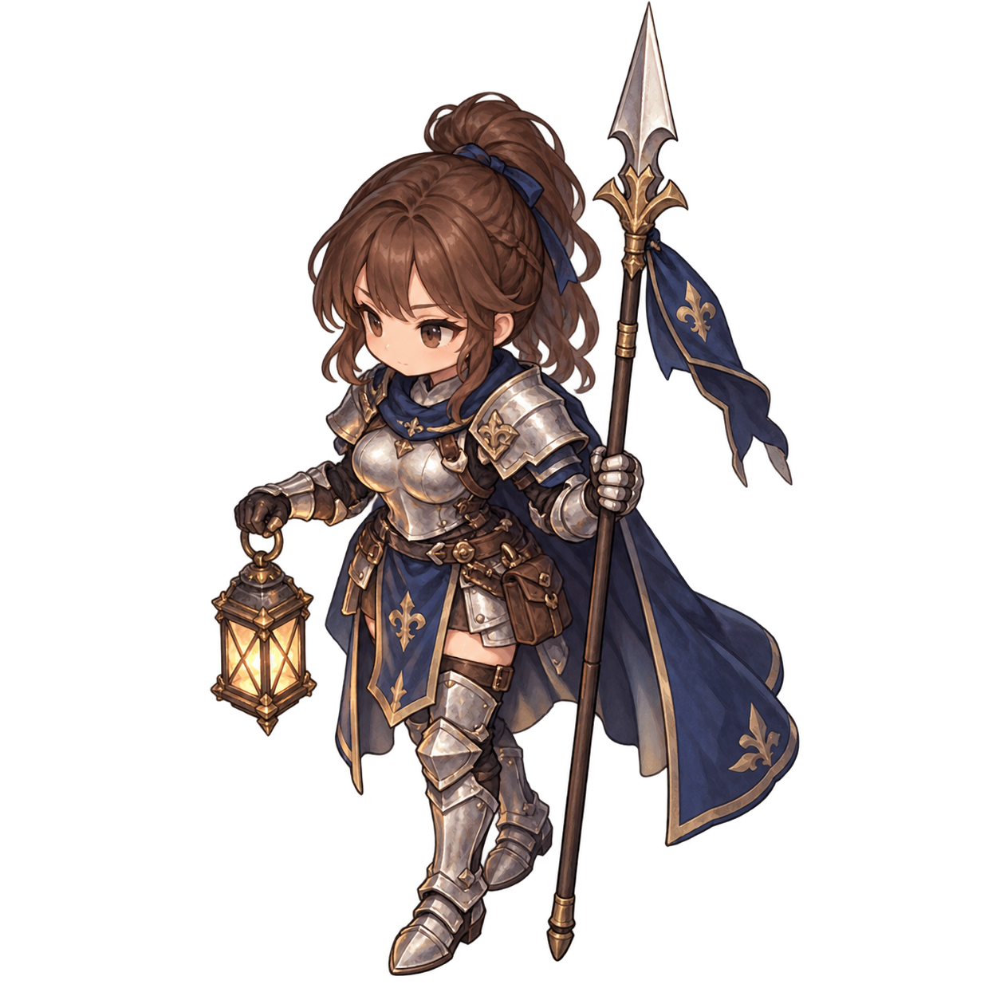
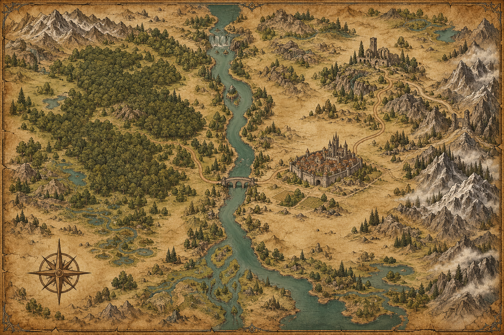

Las campanas de Valdara han vuelto a sonar.
Una carta sin remitente conserva una ceniza que nunca se enfría. Esta noche, una campana responde desde la ciudad.
Preparando el camino…
Habla con la guardia del puente.

I · La ciudad sin campanas
Una carta sin remitente lleva tu nombre y una advertencia: «Ven antes de que la abran». El sello conserva un calor imposible.
Después del puente puedes entrar a Valdara, investigar el taller y las criptas, y continuar al bosque.

Combate: la campaña usa una arena lateral por turnos, sin tablero ni casillas. Selecciona un objetivo, elige una orden y deja que los dados del cielo resuelvan el ataque.
Caminar: arrastra el joystick de la esquina inferior izquierda. Suéltalo para detenerte. Cuanto más lo inclinas, más rápido caminas. También puedes usar WASD o las flechas.
Conversar: toca a Elara o el botón Conversar. Te acercarás automáticamente.
Personaje: abre tu hoja y guarda un nombre, clase, subclase y género antes de cruzar. Cada combinación cambia la silueta, el emblema y la presencia del personaje.
Mapa: pulsa el indicador de misión de la esquina superior izquierda para ver la región y tu ubicación.
Guardado: la posición y el diálogo se conservan en este navegador. La escena se desbloquea cuando guardas la hoja de personaje.
En celular, la orientación horizontal deja ver más del paisaje. Puedes jugar también en vertical.